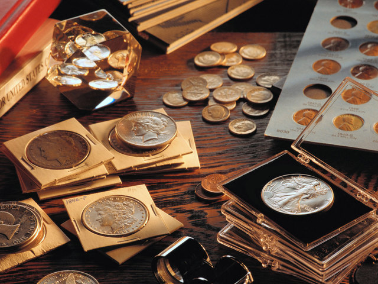

Yervopada Numizmatika
Pyotr 1 tomonidan Peterburgda tashkil etilgan muzey kunskamerada boshqa eksponatlar bilan birga tanga pul va medallardan ham katta kolleksiya to‘plagan. Kunskamerada doim o‘z kolleksiyasini to‘lg‘azib turgan, to‘plagan tanga pullarni tartibga solgan. Undagi qimmatbaho pullar kolleksiyasi hozirgi vaqtda Davlat Ermitajida joylashtirilgan, bu kolleksiya dunyodagi eng katta kolleksiyalardan biri hisoblanadi, hisobida 300 mingta tanga pul bor. Bundan tashqari Markaziy Osiyo numizmatikasi tadqiqotchi lari orasida M.E.Masson, V.A. Mishkin, Ye. A. Davidovichlar salmoqli o‘rin egallaydilar. Ular qadimgi Markaziy Osiyo tanga pullarini aniqlab turlarga ajratdilar va zarb qilish ishidagi rivojlanishning asosiy bosqichini belgiladilar. Qadimshunos olimlar yer kurrasidagi dastlabki savdo muomalasi ibtidoiy jamoa tuzumining tosh asridan boshlanganligini isbotlaydilar. Ulaming ta’kidlashlaricha inson o‘z mehnatining mahsulotlarini ayirboshlash natijasida savdo - sotiqning ilk va sodda to‘rini vujudga keltirdi. Tanqis ashyolami pul o‘mida ayirbosh qila boshladi. Bundan tovar pul muomalalari mintaqalarda turli ko‘rinishda amalga oshirilgan. Masalan: Osiyo va Afrikada kauri nomli chig‘anoqlar pul vazifasini o‘tganligi ma’lum. Ular ayrim elatlarda qadimdan, ya’ni ibtidoiy jamoa tuzumidan milodiy XX asrgacha savdo vositasi bo‘lib kelgan. Masalan: bu chig‘anoqlar qadimiy Xitoy, Yaponiya, Hindiston shaharlarida ancha vaqtgacha muomalada qadrlangan. VI-VII asrlarda Germaniya, IX asrda Shvesiyada, XVI asrda Riga shahrida ishlatilganligi, Gveniyada ham kauri tasviri tushirilgan pullar mavjud bo‘lganligi aniqlangan. Bundan tashqari insonlar orasida jonliq qoramol yoki, xarsanglar keyinchalik itlaming tishi, cho‘chqa go‘shti, ma’dan parchasi singari narsalar ham savdo vositasi sifatida qo‘llanilgan. Odamzot o‘zi uchun qulay pul shaklini ixtiro etguniga qadar mazkur «pub> lami tabiatdan olib savdo vositasi sifatida ishlatib turgan. Vaqti kelib inson ma’dandan ishlangan p u lparchaning yengiiligini va o‘z yonida olib yurishga qulayligini hisobga olib sof ma’danli quymalami ayirbosh qilishga o‘tadi. Bunday pul birligi qadimgi Ikki daryo oralig‘i va Misrda paydo bo‘lib, bu davrdan e’tiboran inson hayotiga «tanga» holatida kirib keldi. Ammo, bu quymalami insonlar qalbakilashtira boshlaydilar. Qattiq jazo choralariga qaramay bunday hoi davom etavergani sababli, hukmdorlar olz quymalarini muhrlashga, ya’ni ularda biror-tasvirni yoki tug‘rolar-gerblarni ifodalashga odatlandilarki, bu bilan quymalar haqiqiyligi daviat tomonidan kafolatlanadigan bo'ldi.
.jpeg)
0 ‘rta asrlar Yevropasida numizmatika sohasi yaxshi o‘rganilgan. Tahlil va tadqiqotlar ancha ko‘p: 1. 0 ‘rta asr Yevropasida tangalar tarixini 5 davrga bo‘lamiz: 2. Varvarlar zarblari V-VUI asr o‘rtalari 3. Karoling dinori VIII o‘rtalari - X asr 4. Feodallar dinori X - ХШ asr o‘rtalari 5. Grosha - florina ХШ asr o'rtasi XVI asr boshi 6. Taler davri - XVI asr boshi XVIII - XIX asrlar Birinchi davrda varvarlar zarblari - V-VIII asr o‘rtalarida 0 ‘rta asr Yevropasi mamlakatlarida Rim imperiyasi qulagandan keyin Vizantiyada (Konstantinopol) Anastasiy I (491-518) davrida uning nomi bilan qanotli g‘alaba xudosi va (Konstantinopol) nomining 4 harfi yozilgan kumush tangasi zarb qilinadi Vizantiya Imperatori Tiberii (578-582) tomonidan birinchi oltin tanga zarb qilinadi. 568 yili Leovigeld (576-586) davrida Ispaniyaning Priney yarim oroli qo‘shib olinib tresns deb atalgan tanga V tipida (g‘alaba) imperator portreti berilgan tangalari zarb qilinadi. Pul zarb qilish imperator Dialektian (284—305) davrida ancha jonlangan. Konstantin I ning birinchi kumush tangasi (1/144), Konstantin П (337-361) oltin tangasi Burgundiya, Langobard, Anglosakslar ana shu varvarlar tangalaridan foydalanishgan. Alarix П (487-507)uning o‘g‘li Tezalix (507-511), Amalarix (511-526) davrida kumush va oltin tangalarda monogammalar ya’ni yozuvlar o‘yib yozilgan. Bu AMR harflaridir. Orqa tomonida (V) g‘alaba tasviri yozilgan. Yustian I (518-527 va Yustian П (527-565) davrida Iso payg‘ambar tasviri o‘yib yozilgan. Shular tarkibida Amalarixning tangalari saqlanib qolgan. Uning pullari butun Ispaniya bo‘yicha xaridorgir boMgan. Bu tangalar to 531 yilgacha amalda bo4 lgan. 568 yilda taxtni Leovilgeld (568-586) vestgotlaming eng kuchli hukumdori egallaydi. Tanga zarb qilish takomillashadi. Vestgotlaming oxirgi qiroli Germengild (579- 585) davrida tiriens tangasi zarb etiladi. Tanganing old tomonida krest va qanotli farishta, orqa tomonida har xil nomlar yozilgan. Masalan: felix. victor va boshqalar. Langobardlar. Perktarita (672-688), Kipinert (688- 700), Aripert (700-712) tangalarida cvnigper, Pamxis (744-749) davrida esa tanganing old tomonida imperator portreti chizilgan. VII asrning II yarimida Irakliya (610-641), Konstantin П (641-648) davrida tanganing old tomonida imperator portreti orqa tomonida krest tasviri tushirilgan. Dizederiy (756-774) davrida krest tasviri yulduzlar tasviri bilan to‘ldirilgan. Oltin va kumush tangalar imperator Yustian I , Yustian П va Teberiya (582-602) portreti tushirilgan tangalar zarb qilinadi. Yuza tomonida krest (but) chizilgan va tanga triens deb atalgan. Merovenglar davrida VI asrning ikkinchi yarimida solid va triens tangalarida krest tasviri muqaddam joy olgan. Dastlabki, mis tangalar ham vujudga kelgan. Bu tangalar Avstraziya Teuderix (511-534) va qirol Neystr Xildebert I (511-558) davrida ancha rivojlangan. Tanganing yuz tomonida dn theodebeptvs yozuvi bitilgan. Bu pul muomalasi Parij, Sani, Mass, Mazel, Reyn, va Marsel bo‘ylab harakatda bo‘lgan. Tangalar zarb qilish makonlari ham kengaygan. Merovenglar davrida 900 ga yaqin joylarda pul tangalar zarb etilgan. Mahalliy hukumdorlar o‘z qasrlarida ham Fransiya va Angliyada VII asr o‘rtalarida oltin solid hukumron bo4 lgan. Tanga yuzasida gulchambar tasviri bo‘lib orqa tomonida Viktoriya (V) g‘alaba tasviri zarb qilingan. Yoki, ko‘pincha orqa tomoniga but rasmi tushirilgan. VQ asrda shuningdek kichik og‘irlikdagi 1,1 1,3 gr, kumush dinorlari zarb qilingan. Portret, but, yozuv bitilgan. Birinchi davr qariyib 300 yilga cho‘zilgan. Tanga pullami o‘g‘irligi 1,1 gr.dan 1,3 gr. gacha bo‘lgan
Ikkinchi davrda, Karo ling dinori - VTQ о‘rta lari - X asr davri mo baynida turli o‘zgarishlarga sabab bo‘lgan. Tipin Korotki (751-768) davrida kumush dirham og‘irligi jihatidan 780 gr bo‘lib oltinni siqib chiqaradi. Tanganing «funt» nomini olishi Buyuk Karl (768-814) zamonasida yuz beradi. Tanganing yuziga qirol rasmi, ikkinchi tomoniga tanga zarb qilingan qasr tasviri tushiriladi. Tangalarning old tomonida yozuv saqlangan. Masalan: rtpex pipins. Endi tanganing orqasida cherkov, shahar darvozasi va kema tasvri tushuriladi. Tangalarda yozuv saqlanib qolgan. Imperator ki avg vstvs gulchambar va imperator portreti tushurilgan. Angliyada qirol Eduard Muchenik (975-978), Knut (1016-1035), Garold (1035-1040) Hardaknut (1040-1042), Eduard Ispovednik (1042-1066) davrida oltin tangalar zarb etilgan. Tangada qirol portreti, ya’ni boshi va orqa tomonda but tasviri tushirilgan. Keyinchalik, qirol Vilgelm Bosqinchi (1066-1087), Stefan I (1135-1154), Genrix I (1100-1125), Genrix II Plantagenet (1154- 1189) davrida penni nomli oltin tanga zarb qilib, savdo va toiov vazifasida keng qo‘llangan. Graftiklanning qudrati tobora oshib borgan. Ayniqsa, Anjuy grafligi boshqa shaharlar bilan har doim raqobatda g‘olib kelgan. Bu graflikda og‘irligi 1,5 gramli oltin tanga zarb etilgan. Tanganing yuza qismida qirol boshi orqa tomonida esa but tasviri tushirilgan. Faqat Genrix VD3 (1485-1509) davrida penni o‘girligi 0,54 gramga tushib qoladi. Uchunchi davr feodallar dinori Х-Х1П asr o‘rtalarigacha davom etib, bu davr rivojlangan feodalizm davri deb ataladi. Yevropada ltaliya davlati o‘ziga xos rivojlanishni boshidan kechirayotgan edi. (Jndagi shaharlarning rivojlanishi, savdo - sotiqning o‘sishi pul muomalasini yanada rivojlanishini taqmzo etgan. Qirol Barbarossa Fridrix I (1152-1190) davrida oltin tanga pullari 0,82, 0,84 gr. tashkil etgan. Oltin tanga 660 probali bo‘lib, xalqaro maydonda xaridorgir bo‘lgan. Itahyaning Florensiya shahri ocsha paytda eng odamlar bilan gavjum shahar sanalgan. Shaharda 1,75 gr. keyinchalik 1,80 gr. tanga zarb qilish yo‘lga qo‘yilgan. Yuza qismida gulchambar va shahar gerbi, orqa tomonida Iso Payg4ambar tasviri tushirilgan. Tangada gul tasviri bo‘lgani uchun (latincha: flos, fiore) florin nomini olgan. Venetsiya shahri o‘rta asrlar Italiyasining eng gullab yashnagan davriga t o‘g‘ri keladi. Shahar nihoyatda boy boigan. Dunyo mamlakatlarining kemalari savdo sotiq olib borish uchun shu shaharga kemalarda kelishgan, savdo boji to‘lashgan. Venetsiyada qirol Enriko Dondalo (1192-1205) davrida 2,18 gramli kumush tanga zarb etilgan. 1285 yildan 3,56 gramli oltin tanga zarb etilgan. Tanganing old tomonida dvcat so‘zi yozilgan
Fransiyada qirol Luyudovik IX (1226-1270) davrida 4,22 gramli, 958 probali oltin tanga zarb etilgan. Tanga grosha nomini olgan. 1306 yilda qirol Filip IV 42,5 gramli oltin dinor zarb etadi. Lekin, yillar davomida tanga nominali pasayib borgan. Masalan, 1365 yilda Karl V (1364— 1380) davrida bu dinoming og‘irligi 2,55 gramni tashkil etgan. To'rtinchi davr, grosha-florina ХШ asr o‘rtasi, XVI asr boshlarigacha davom etgan. Asosan, 1137 yilda yuz yillik urush barcha Yevropa davlatlarini iqtisodiy ravnaqiga rahna solgan. To‘lov, soliq yig’ishda qiyinchiliklar bo‘lgan. Oltin pullar kamayib ketgan. Bu esa, oltin va kumush konlarini qidirib topish va kavlab olishni taqozo etgan. Albatta, primitiv asbob-uskunalar, ishning ogcirligi, xavfliligi, ko‘p odamlaming o‘limiga olib kelgan. XV asr Yevropa davlatlarida pul zarb qilishning rivojlangan davr iga kiradi. Asosan kumush tangalar talerlar zarb qilish va hududlar bo‘yicha chiqarish kengayadi. Ayniqsa, qadimgi german hududlarida shahar davlatlarida Lyunbergda (1434), Gamburgda (1435), Saksoniyada (1455), Bremenda (1463), Polshada (1320) yillarda zarb qilish yo‘lga qo‘yilgan
Beshinchi davr, taler davri: XVI asr boshi XVIII-XIX asrlargacha davom etgan. Oltin tangalar haqida fikrimizni davom ettiradigan bo‘lsak, soliq yig’uvchilar ro‘yxatida Yevropa davlatlarining aholi sonini ham aniqlay olishimiz mumkin. Masalan, Gollandiya hududida 1623 yilda 1'5 mln. aholi yashagan. Gollandiyada XIV asrda yiliga 18-19 kg oltin tanga zarb etilgan. XV asrda Buyuk geografik kashfiyotlardan keyin savdo munosabatlari rivojlanishi natijasida mamlakatlar o'rtasida umumiy qiymatga ega boclgan pul muomilasini tashkil etishni talab qiladi. Tanga XV asrda Venesiyada Nikola Tron (1471-1473) 945 probali og‘irligi 6,52 gr. kumush tanga zarb qilinadi. Tanga Lir deb ataladi-orqa tomonida sher rasmi tasvirlangan. Mazkur tanga nisbatan boshqa mamlakatlar bilan to4ov'vazifasini bajarishda ishlatilan, xaridorgir boMgan.Tanga pullaming keyingi taraqqiyotiga e’tibor qaratsak, har bir davlat o‘z taraqqiyotidan kelib chiqib, iqtisodiy rivojlanishi uchun o'z tanga pullarini zarb etganini ko‘ramiz. Albatta oltin, kumush va mis tarzida amalda qoilanib kelingan. To qog‘oz pullar chiqquncha tangalar muomalada bo‘lgan, iqtisodiy, savdo- pul munosabatlarini tartibga keltirib turgan. Jamiyat taraqqiyoti hamma vaqt pul muomalasini yangilashni, savdo va xo‘jalik yuritishni yangicha usullarini joriy etishni taqozo etib turgan. Muhimi, jamiyatda tovar pul munosabatlarini tartibga solish va barqarorlashtirishda muhim kasb etgan. 1974 yili gersog Lelesio Mariya S.Foria (1966— 1984) oczini rasmi bilan tanga zarb qiladi: 9,65 gr. 960 probali tanga teston deb atalgan. Lekin bu pul uzoq muomalada boia olmadi. Keyinchalik, Chexiyani Yaximov-shahrida taler tangasi zarb qilinadi, 2,9 gr. Yangicha tanga yuzida Ioaxim Svetoy - orqa tomonida sher rasmi tushurilgan. Bu tanga Ispan Amerikasida keng tarqalgan. Gollandiyada - dolder, Italiyada - taller, Skandinaviyada - doler, Shimoliy Amerikada - dollar deb atalgan. Angliyada kron, Ispaniya, Niderlandiyada - potagon, detal, Ispaniyada - peso, Italiyada - skudo, Fransiyada - ekyu deb atalgan. Keyinchalik mazkur tanga umumiy nom olib dollar deb atalgan